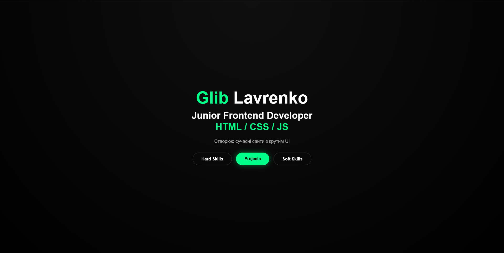
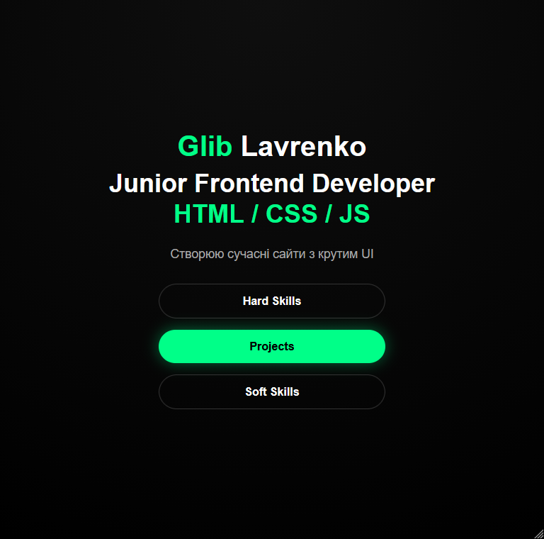
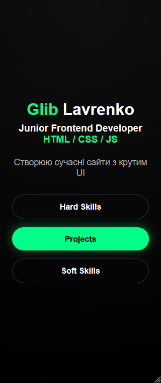

Тип: Особистий навчальний кейс.
Мета: Створити професійне резюме для подачі до IT-компанії та отримати перший досвід взаємодії з роботодавцями.
Це одне з перших резюме, які я створив та відправив до IT-компанії Uinno. На той момент я лише починав знайомитися з процесом пошуку роботи та підготовки професійних документів.
Під час роботи над резюме я вивчав сучасні підходи до оформлення CV, вчився коротко та зрозуміло презентувати свої навички, освіту, особисті проєкти та досягнення. Особливу увагу приділив структурі, грамотності та візуальному оформленню документа.
Цей кейс став важливим кроком у моєму професійному розвитку та допоміг краще зрозуміти вимоги IT-компаній до кандидатів. Саме після створення цього резюме я почав активніше працювати над власним портфоліо та навчальними проєктами.


